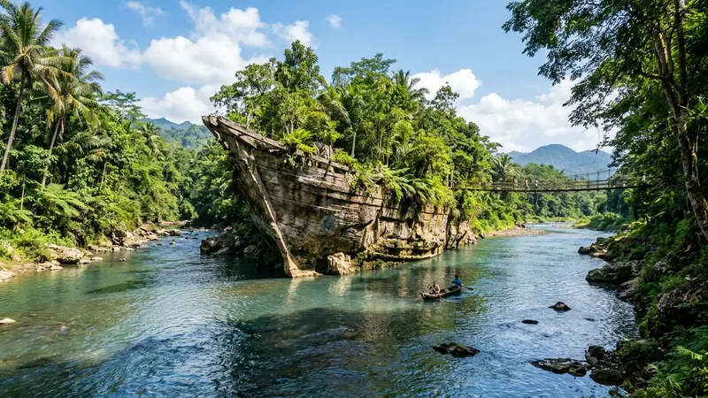

Wisata Batu Kapal adalah kawasan wisata sungai di Piyungan, Bantul, yang menawarkan aktivitas menyusuri bebatuan, berfoto di jembatan gantung, dan menikmati suasana hutan rakyat yang asri.
- Aktivitas utama meliputi menyusuri bebatuan sungai, berfoto, dan menikmati suasana hutan rakyat yang teduh
- Kawasan ini populer sebagai tempat singgah pesepeda sebelum akhirnya berkembang menjadi objek wisata resmi warga
- Sempat viral setelah dikaitkan dengan lokasi syuting film KKN di Desa Penari
- Cocok dikunjungi keluarga, komunitas sepeda, maupun rombongan kecil dengan pengawasan tetap diperlukan di area bebatuan
- Suasana kawasan relatif tenang karena berada di tengah hutan rakyat yang jauh dari pusat keramaian kota
Apa Saja Aktivitas yang Bisa Dilakukan di Wisata Batu Kapal?
Aktivitas utama di wisata Batu Kapal berpusat pada interaksi dengan sungai dan formasi batu raksasa yang menjadi ciri khas kawasan ini. Wisatawan dapat berjalan menyusuri bebatuan besar di tepi Sungai Opak sambil menikmati suara gemericik air dan udara sejuk khas pedesaan.
Selain menyusuri bebatuan, banyak pengunjung memanfaatkan jembatan gantung yang membentang di atas sungai sebagai titik untuk berfoto sekaligus melihat pemandangan dari sudut yang lebih tinggi. Bagi yang membawa anak-anak atau rombongan keluarga, area tepi sungai yang lebih landai biasanya dimanfaatkan untuk duduk santai sambil menikmati jajanan dari warung setempat.
Kawasan ini juga cukup diminati oleh komunitas sepeda, mengingat popularitas awalnya justru berasal dari para pesepeda yang singgah beristirahat di jalur pedesaan Piyungan sebelum kawasan ini resmi dikembangkan sebagai objek wisata.
Mengapa Wisata Batu Kapal Bisa Viral di Media Sosial?
Popularitas wisata Batu Kapal di media sosial bermula dari unggahan foto para pesepeda yang melintasi kawasan hutan rakyat di Piyungan dan menemukan formasi batu unik di tengah Sungai Opak. Foto-foto tersebut kemudian menyebar dan menarik minat wisatawan lain untuk datang secara langsung.
Momentum viralitas semakin besar setelah kawasan hutan dan sungai di sekitar Batu Kapal digunakan sebagai salah satu lokasi syuting film horor nasional KKN di Desa Penari pada Januari 2020. Suasana hutan lebat berpadu bebatuan besar dan sungai dinilai cocok untuk menggambarkan latar desa misterius dalam film tersebut, sehingga banyak penggemar film yang penasaran dan berkunjung langsung ke lokasi aslinya.
Meski memiliki kaitan dengan film bernuansa horor, suasana di lapangan pada siang hari tetap terasa nyaman dan aman untuk kunjungan keluarga maupun rombongan.
Apakah Wisata Batu Kapal Aman untuk Anak-Anak?
Wisata Batu Kapal secara umum aman dikunjungi bersama anak-anak selama orang tua tetap melakukan pengawasan aktif, khususnya di area bebatuan yang licin dan tepi sungai dengan arus yang dapat berubah tergantung musim.
Beberapa area di kawasan ini memiliki medan berbatu dan permukaan basah yang berisiko membuat anak-anak tergelincir apabila tidak menggunakan alas kaki yang sesuai. Selain itu, kedalaman dan arus Sungai Opak dapat meningkat pada musim hujan, sehingga penting bagi orang tua untuk menghindari area yang terlalu dekat dengan aliran deras.
Dengan persiapan yang tepat, seperti memilih waktu kunjungan pagi hari dan tetap berada di jalur yang direkomendasikan pengelola, kawasan ini dapat menjadi pilihan wisata keluarga yang edukatif sekaligus menyenangkan.
Bagaimana Suasana Wisata Batu Kapal Dibandingkan Wisata Sungai Lain di Bantul?
Dibandingkan dengan sejumlah wisata sungai lain di Bantul, wisata Batu Kapal memiliki ciri khas berupa formasi batu besar yang menyerupai kapal serta tebing sedimen purba yang mengapit aliran sungai. Kombinasi ini menciptakan lanskap yang relatif jarang ditemukan pada objek wisata sungai konvensional.
Suasana yang masih dikelilingi hutan rakyat turut memberikan nuansa lebih alami dan tenang dibandingkan wisata sungai yang telah dikembangkan secara komersial dengan banyak fasilitas buatan. Karakter inilah yang membuat wisata Batu Kapal lebih diminati wisatawan yang mencari suasana alami tanpa terlalu banyak intervensi bangunan modern.
Ragam titik pemotretan yang tersedia di kawasan ini dibahas lebih rinci pada artikel Spot Foto Batu Kapal, sementara gambaran umum profil kawasan dapat dilihat pada artikel utama Taman Wisata Batu Kapal.
Apa yang Perlu Dipersiapkan Sebelum Berkunjung?
Sebelum berkunjung ke wisata Batu Kapal, ada beberapa persiapan yang sebaiknya dilakukan agar kunjungan lebih nyaman dan minim kendala di lapangan.
- Cek kondisi cuaca dan potensi hujan, terutama bila berencana berkunjung pada musim penghujan
- Siapkan alas kaki anti-selip untuk medan berbatu dan basah
- Bawa pakaian ganti bila berencana bermain air di sungai
- Siapkan uang tunai untuk kontribusi sukarela dan jajanan di warung sekitar lokasi
- Rencanakan waktu kunjungan pagi hari agar suasana lebih nyaman dan pencahayaan lebih baik untuk berfoto
FAQ
Apa saja aktivitas utama di wisata Batu Kapal?
Aktivitas utamanya meliputi menyusuri bebatuan sungai, berfoto di jembatan gantung, dan menikmati suasana hutan rakyat yang teduh.
Apakah wisata Batu Kapal ramai dikunjungi setiap hari?
Kawasan ini buka setiap hari, namun umumnya lebih ramai pada akhir pekan dan musim hujan saat air sungai tampak lebih biru.
Apakah wisata Batu Kapal cocok untuk rombongan komunitas sepeda?
Kawasan ini cukup populer di kalangan komunitas sepeda karena berada di jalur pedesaan yang sering dilalui pesepeda di Piyungan.
Arya
Siswa Skariga yang sedang belajar di Gm Academy.